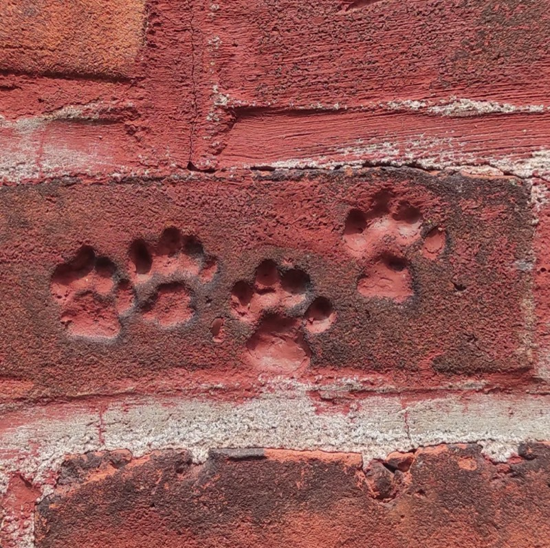

Notas de caminata
Montréal à double entente
Secrets de l'Est, lanes from the West
Cada nota parte de un detalle de la calle y sigue la historia que aparece cuando uno vuelve a mirar.

Las nuevas notas aparecerán aquí.
Secrets de l'Est, lanes from the West
Cada nota parte de un detalle de la calle y sigue la historia que aparece cuando uno vuelve a mirar.

Las nuevas notas aparecerán aquí.